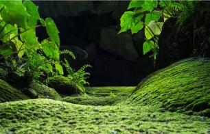
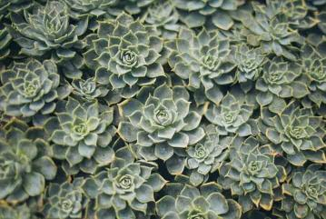
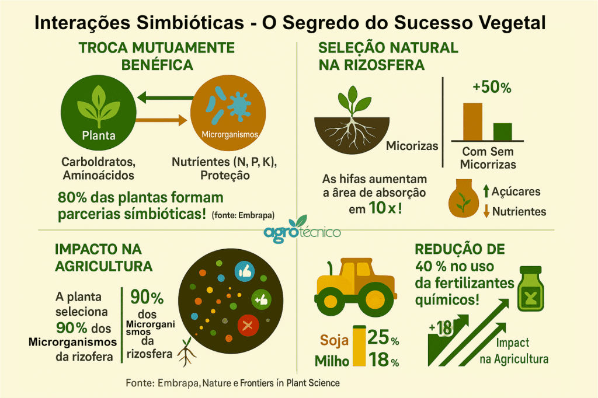

Feito por Ghoya pedido de prof. Oscar
Zona Raizes e plantas ocultas
A fundação sob nossos pés.
O que vemos acima do solo é apenas metade da história.
Os Musgos
Sobreviventes ancestrais que retêm umidade como esponjas.
Vantagem: Previnem a erosão e criam microhabitats para pequenos seres.
As Plantas rasteiras
Muitas vezes chamadas de "ervas daninhas", elas protegem a pele da terra contra o sol direto.
Vantagem: Proteção térmica do solo e abrigo para a microfauna.
Os Raízes
O sistema de ancoragem e nutrição. Elas impedem deslizamentos e armazenam carbono.
Vantagem: Estabilização do solo e combate ao aquecimento global através do sequestro de carbono.
Espécies em Distaque

Musgos
Temos os: Sphagnum, Musgo-tapete
Musgo-de-fogo, ect.Ler mais

Plantas rasteiras
Temos os: Trevo-branco, Beldroega
Hera-terrestre, ect...Ler mais

Raízes
Temos os: Raízes de Gramíneas, Raízes de Leguminosas,
Raízes de Árvores de Mangue, ect... Ler mais